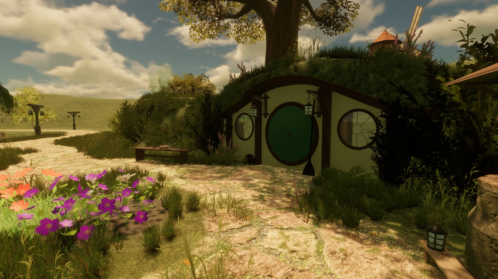
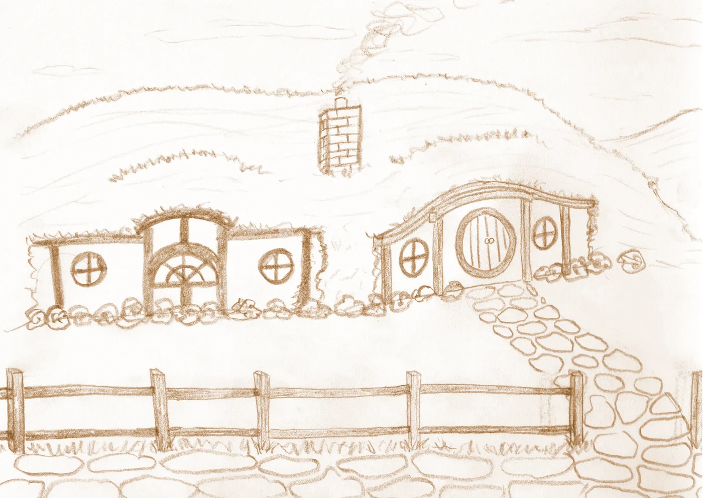
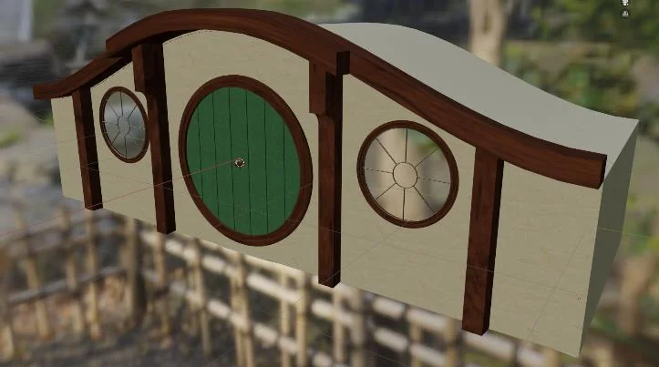
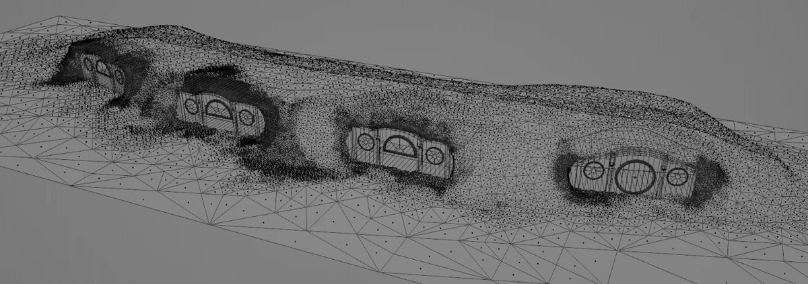
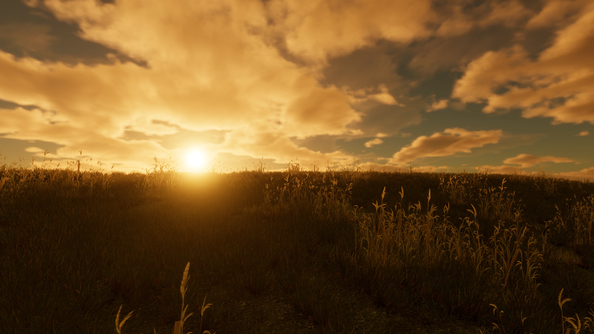
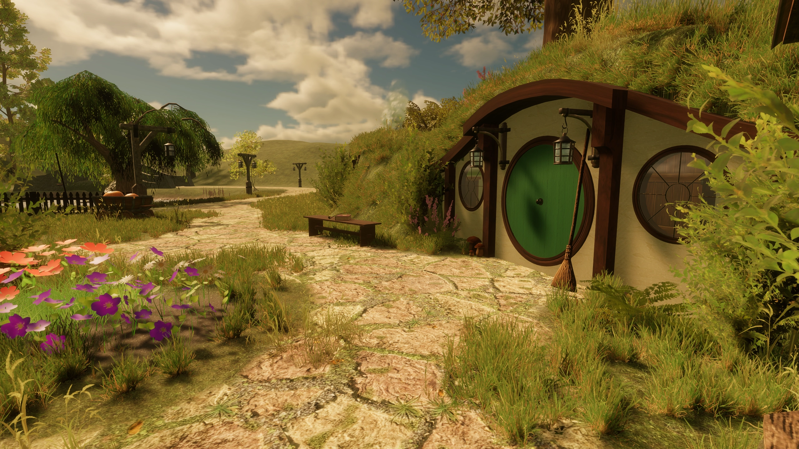
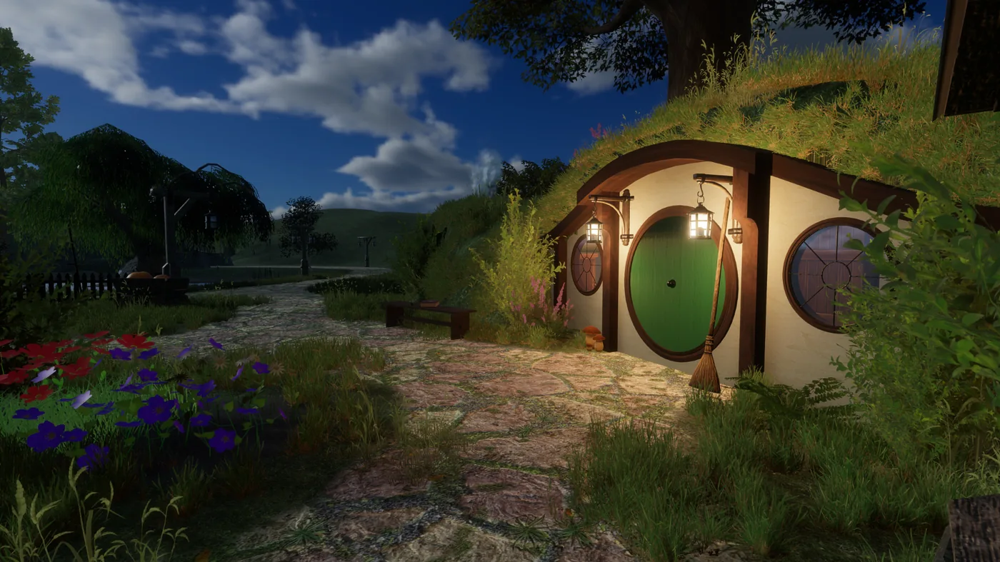

01
Entdecken und interagieren
Die Tür öffnet und schließt bei Annäherung. Das Lagerfeuer unter einem Kessel lässt sich per Mausklick an- und ausschalten.
STUDIENPROJEKT · 2025 · 3D ENVIRONMENT
Ein Ort, der zum Entdecken einlädt.
Aus einer Architekturidee entstand eine begehbare Fantasy-Welt, in der Atmosphäre, Landschaft und kleine Interaktionen zu einem zusammenhängenden Erlebnis werden.
UNIVERSITY PROJECT · 2025 · 3D ENVIRONMENT
A world made for wandering.
An architectural idea grew into an explorable fantasy world, where atmosphere, landscape and subtle interactions come together to create a cohesive experience.

01 / DIE IDEE
Die Studienaufgabe lautete „Bauen Sie Ihr Traumhaus“. Meine Antwort darauf war eine naturverbundene, vom Hobbiton Movie Set inspirierte Architektur: ein Haus im Hügel, mit runder Tür, Holzrahmen, Naturstein und einem Garten, der zum Erkunden einlädt.
Am Anfang standen ein Exposé, eigene Referenzfotografien und eine handgezeichnete Skizze. Die Gestaltung sollte Ruhe und Geborgenheit vermitteln, nicht nur eine Gebäudefassade zeigen.
01 / THE VISION
The university brief was to “build your dream house.” My interpretation was a nature-inspired home influenced by the Hobbiton Movie Set, embedded in a hillside, with a round door, timber details, natural stone and an inviting garden.
I began with a written concept, personal reference photographs and a hand-drawn sketch. The aim was to create a sense of calm and belonging, rather than a building façade alone.

02 / DIE UMSETZUNG
Die Architekturteile, darunter Wände, Türen, Fenster und Schornsteine, habe ich in Blender modelliert. Eine technische Herausforderung war die Gestaltung der in den Hügel eingelassenen Gebäude: Das Standard-Terrain von Unity eignete sich nicht für die benötigten Höhlenformen und Überhänge.
Deshalb habe ich ein eigenes Hügel-Mesh in Blender erstellt, in das sich die Bauteile einfügen ließen, und die Geometrie anschließend als FBX nach Unity übertragen. Die weitere Umgebung wurde mit ergänzenden Drittanbieter-Assets, Materialien und Effekten gestaltet.
02 / BUILDING THE WORLD
I modeled the architectural elements in Blender, including walls, doors, windows and chimneys. One technical challenge was embedding the houses into a hillside: Unity's standard terrain did not provide the cave-like forms and overhangs required for the design.
My solution was to create a custom hill mesh in Blender and integrate the architectural elements into it, then export the geometry to Unity as FBX. Third-party assets, materials and effects helped complete the surrounding environment.


03 / INTERAKTION & ATMOSPHÄRE
Die Umgebung ist als First-Person-Erlebnis angelegt. Dabei sollten Funktionen möglichst selbstverständlich Teil der Spielwelt sein und nicht nur über Menüs funktionieren.

01
Die Tür öffnet und schließt bei Annäherung. Das Lagerfeuer unter einem Kessel lässt sich per Mausklick an- und ausschalten.
02
Ein automatischer Tag-Nacht-Zyklus verändert Himmel und Licht. Nachts reagieren die Lampen auf die Entfernung der Spielfigur.
03
Schmetterlinge, Windmühlenflügel, Schornsteinrauch und sich im Wind bewegende Vegetation lassen die Landschaft lebendiger wirken.
04
Wassergeräusche werden bei Annäherung lauter, Musik wechselt mit der Tageszeit. Ein Wegweiser führt innerhalb der Welt zum Spielausgang.
03 / INTERACTION & ATMOSPHERE
The environment is designed for first-person exploration. Interactions are integrated into the setting itself, rather than relying solely on on-screen menus.
01
The front door opens and closes when approached. A campfire beneath a cauldron can be toggled with a mouse click.
02
An automatic day–night cycle changes the sky and lighting. At night, lamps respond to the player's proximity.
03
Butterflies, a rotating windmill, chimney smoke and wind-animated vegetation make the landscape feel alive.
04
Water ambience grows louder as the player approaches; music changes with the time of day. An in-world sign leads towards the exit.
04 / IMPRESSIONEN
04 / GALLERY


05 / SELBST ENTDECKEN
Die Desktop-Anwendung wird mit WASD und Maus gesteuert. Interaktionen erfolgen über Annäherung oder Mausklick.
Spiel herunterladen Credits & verwendete Assets ansehen05 / EXPERIENCE IT
The desktop application uses WASD and mouse controls. Objects react to proximity or mouse clicks.
Download game View credits & third-party assets